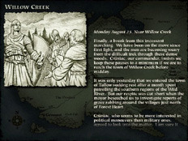
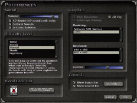
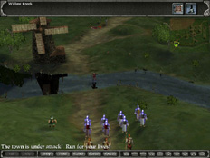
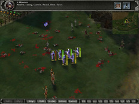
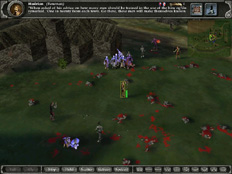

<div class="normal">
If you're wanting to know what the heat of battle looks like, here are some screenshots of <B>Myth II: Soulblighter</B>. Just click on each image to see an enlarged version.
</div>

<TABLE BORDER="0" CELLPADDING="0" CELLSPACING="0">
	<TR>
		<TD VALIGN="TOP"><A href="img/screens/title.jpg"><picture><source srcset="img/screens/title_sm.webp" type="image/webp"></picture></A></TD>
		<TD WIDTH="10">&nbsp;</TD>
		<TD VALIGN="TOP"><A href="img/screens/intro.jpg"><picture><source srcset="img/screens/intro_sm.webp" type="image/webp"></picture></A></TD>
	</TR>
	<TR>
		<TD COLSPAN="3" HEIGHT="10">&nbsp;</TD>
	</TR>
	<TR>
		<TD VALIGN="TOP"><A href="img/screens/pref.jpg"><picture><source srcset="img/screens/pref_sm.webp" type="image/webp"></picture></A></TD>
		<TD></TD>
		<TD VALIGN="TOP"><A href="img/screens/willow0.jpg"><picture><source srcset="img/screens/willow0_sm.webp" type="image/webp"></picture></A></TD>
	</TR>
	<TR>
		<TD COLSPAN="3" HEIGHT="10">&nbsp;</TD>
	</TR>
	<TR>
		<TD VALIGN="TOP"><A href="img/screens/willow1.jpg"><picture><source srcset="img/screens/willow1_sm.webp" type="image/webp"></picture></A></TD>
		<TD></TD>
		<TD VALIGN="TOP"><A href="img/screens/willow2.jpg"><picture><source srcset="img/screens/willow2_sm.webp" type="image/webp"></picture></A></TD>
	</TR>
</table><BR><BR>
